寻找一种可理解的共识算法 (扩展版）
Table of Contents
- 摘要（Abstract）
- 1 引言（Introduction）
- 2 复制状态机（Replicated state machines）
- 3 Paxos的问题？（What's wrong with paxos?）
- 4 为可理解性而设计（Designing for understandability）
- 5 Raft共识算法（The Raft consensus algorithm）
- 6 集群成员变更（Cluster membership changes）
- 7 日志压缩（Log compaction）
- 8 客户端交互（Client interaction）
- 9 实现和评估（Implementation and evaluation）
- 10 相关工作（Related work）
- 11 结论（Conclusion）
- 12 致谢（Acknowledgments）
- 参考文献（References）
摘要（Abstract）
Raft是一个共识算法，用来管理复制日志（relicated log）。它等价于(multi-)Paxos，并且跟Paxos效率相当，但是它的结构跟Paxos不同；这使得Raft比Paxos更易懂，也为构建实用系统提供了更好的基础。为了便于理解，Raft将共识的关键部分（例如，leader选举，日志复制，安全性）分解开，并强化了一致性以减少需要考虑的状态数。一项用户调研的结果表明，对学生来说，Raft比Paxos更容易学习。Raft还包括一种集群成员变更的新机制，这个机制使用重合的多数集来保证安全性。
1 引言（Introduction）
共识算法允许多台机器作为一个统一的整体，可以在部分机器失效（failure）的情况下继续运行。因此，它们在构建可靠的大规模软件系统方面发挥着关键作用。在过去的十年中，Paxos15 16是被讨论最多的共识算法：大多数共识实现基于Paxos或受它影响，Paxos也成了教学生学习共识算法的主要工具。
可惜的是，即便做过很多使它更容易理解的尝试，Paxos还是很难懂。而且，要想支持实用系统，需要对它的架构做复杂的修改。因此，不管是系统建造者还是学生都在跟Paxos较劲。
跟Paxos斗智斗勇之后，我们打算找到一种新的、能为系统构建和教育提供更好的基础的共识算法。我们的方式与众不同，因为我们的主要目标是可理解性：我们能为实用系统定义一种共识算法，并用比Paxos简单得多的方式描述这种算法吗？另外，我们希望算法能够帮助系统构建者建立必要的直觉。算法不止要能够工作，还要很容易理解它为什么能够工作。
工作成果是一个叫Raft的共识算法。在设计Raft时，我们使用了特殊的技术来提高可理解性，包括问题分解（Raft将leader选举，日志复制和安全性三部分分开）和状态空间简化（比起Paxos，Raft减少了不确定性，减少了服务器之间出现不一致的方式）。在两所大学中对43个学生做的用户研究表明，Raft比Paxos容易理解得多：学习了两个算法之后，其中33个学生能更好地回答Raft问题。
Raft在很多方面跟已有的共识算法很相似（特别是Oki和Liskov的Viewstamped Replication29 22），但它有几个新奇的特性：
- 强leader
比起其它共识算法，Raft使用了更强形式的领导（leadership）。例如，日志条目只会从leader传输到其它服务器。这简化了复制日志的管理，使Raft更容易理解。 - Leader选举
Raft使用随机化的定时器来选举leader。这只需要给所有共识算法都用到的心跳加了点额外的机制，同时能简单快速地解决冲突。 - 成员变更
Raft变更集群成员的机制使用了联合共识（joint consensus）的方式，在转换过程中，两个不同配置的多数集会有重叠。这使得在配置修改的过程中集群可以继续正常运行。
我们相信Raft比Paxos以及其它共识算法更好，不管是用于教学还是作为实现的基础。它比其它算法更简单，更容易理解；它为现实系统提供了足够完整的描述；它有多个开源的实现，被多家公司使用；它的安全性已经被形式化地描述和证明；它的效率跟其它算法的效率相当。
本论文的后续部分介绍了复制状态机问题（第2节），讨论了Paxos的优势和不足（第3节），描述了我们实现可理解性的一般方法（第4节），介绍了Raft共识算法（第5到8节），对Raft做了评估（第9节），并讨论了相关的工作（第10节）。
2 复制状态机（Replicated state machines）
共识算法一般出现在复制状态机的场景中37。在该方法中，多台服务器上的状态机处理相同状态的完全一致的副本，在某些服务器宕机的情况下也能继续运行。复制状态机用于处理分布式系统中的各种各样的容错问题。例如，有单个集群leader的大规模系统，例如GFS8，HDFS38，以及RAMCloud33，一般会使用单独的复制状态机来管理leader选举，存储在leader崩溃时也不会丢失的配置信息。复制状态机的例子包括Chubby2和ZooKeeper11。
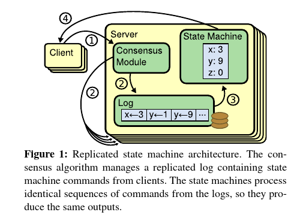
复制状态机一般使用复制日志来实现，如图1所示。每台服务器都存储一份日志，日志里包含一连串的命令，状态机会依次执行这些命令。所有日志包含同样的命令，并且这些命令按同样的次序排列，因此每个状态机处理的是同样的命令序列。因为状态机的确定的，每个状态机都会得到同样的状态和同样的输出序列。
保持复制日志的一致是共识算法的任务。服务器上的共识模块从客户端接收命令，将命令添加到日志中。它会跟其它服务器上的共识模块通讯，来保证所有的日志最终都包含相同的请求，且以同样的顺序排列，即便是有些服务器会失效。一旦命令被正确地复制了，每台服务器的状态机就会按照日志顺序处理它们，并将结果返回给客户端。因此，多台服务器就表现得像是单个十分可靠的状态机。
实用系统所用的共识算法一般具有如下属性：
- 共识算法会保证在所有非拜占庭条件下（非拜占庭条件包括网络延迟，分区，以及网络包丢失、重复和乱序）的安全性（决不会返回错误的结果）。
- 只要大多数服务器都在运行、并且服务器之间以及服务器跟客户端之间可以通信，共识算法就是完全可用的。因此，五台服务器的集群能够容忍任意两台服务器失效。假定服务器发生故障后会停止运行；它们后续会使用稳定存储器保存的状态恢复并重新加入到集群。
- 共识算法不依赖计时来保证日志的一致性：时钟故障和严重的消息延迟最多只会导致可用性问题。
- 一般来说，对于某个命令，只要集群的大多数服务器响应过一轮远程过程调用，命令就可以完成；少数运行缓慢的服务器不会影响系统的整体性能。
3 Paxos的问题？（What's wrong with paxos?）
过去十年，Leslie Lamport的Paxos协议15几乎就是共识的同义词：课程里教的基本上是它，大多数的共识实现以它为起点。Paxos首先定义了一个能够对单个决定（例如，复制单条日志条目）达成一致的协议。我们将这个协议称为单决议Paxos（single-decree Paxos）。然后，Paxos将单决议Paxos协议的多个实例结合起来以便对一系列的决定（例如一份日志）达成一致（multi-Paxos）。Paxos能保证安全性和活性（liveness），也支持改变集群成员。它的安全性已经被证明，正常情况下它性能也够好。
遗憾的是，Paxos有两个显著的缺点。第一个缺点是Paxos非常难理解。完整的解释15出了名的模糊；很少有人能理解它（而且都需要付出巨大努力）。因此，多次有人尝试用更简单的术语来解释Paxos16 20 21。这些解释针对的是single-decree Paxos，即便如此，这也是项很有挑战的工作。在对NSDI 2012参会者做的非正式调查中，我们发现几乎没人觉得Paxos容易，即便是经验丰富的研究者也是如此。我们自己努力研究过Paxos；直到读过几个简化的解释，并设计了我们自己的替代协议之后，我们才完全理解了整个协议，这个过程花费了差不多一年。
我们假设Paxos的难以理解是因为它以single-decree Paxos作为基础。Single-decree Paxos是微妙难懂的：它分为两个阶段，每个阶段都没有直观的解释，而且没法单独理解。因此，很难直观了解为什么单Paxos协议能够工作。多Paxos的组合规则增加了大量额外的复杂性和微妙之处。我们相信，对多个决定（例如，一份日志，而不是单独的条目）达成共识的问题能够以其它更直接、更明显的方式做分解。
Paxos的第二个问题是它没有为构建实用的实现提供良好的基础。一个原因是multi-Paxos并没有广泛被认可的算法。Lamport的描述基本都是关于单Paxos；他粗略地给出了由单Paxos到多Paxos的可能方式，但缺少很多细节。有几个完善和优化Paxos的尝试，例如26，39和13，但它们每个都不一样，跟Lamport的粗略描述也不同。Chubby4等系统实现了类似Paxos的算法，但它们的多数细节都没有公开。
另外，Paxos的架构对于构建实用系统来说也不好；这是以单Paxos作为基础的另一个后果。例如，独立地选择一批日志条目然后将它们合并成一个连续日志没有什么好处；只会增加复杂性。围绕日志来设计系统更简单，也更高效，这个系统里，新的日志条目以特定的次序连续地追加到日志中。Paxos的另一个问题是它的核心部分使用了对称的点对点方式（虽然最后它建议了一种弱形式的领导作为性能优化）。在只需要做出一个决定的简化的场景里，这是有意义的，但实用系统里几乎不会用这种方式。如果要做出一系列决定，更简单也更高效的方式是先选出一个leader，由leader来协调做出决定。
因此，实用系统跟Paxos基本没有相似之处。每个实现都开始于Paxos，发现实现的困难之处，然后开发一种非常不同的架构。这耗时耗力又容易出错，而Paxos的难以理解使得问题更加严重。Paxos的形式化对于证明它的正确性可能有用，但是现实中的实现跟Paxos差异巨大导致这些证明没有什么用处。下面来自Chubby实现者的意见很有代表性：
Paxos算法的描述和现实系统的需求之间有着巨大的鸿沟…最终实现的系统将会基于一个未经证明的协议4。
因为这些问题，我们认为不管是对系统构建还是教育，Paxos都没有提供很好的基础。考虑到大规模软件系统中共识的重要性，我们决定看看能不能设计一个比Paxos更好的共识算法。Raft就是这个尝试的结果。
4 为可理解性而设计（Designing for understandability）
我们在设计Raft时有几个目标：它必须为系统构建提供完整且实用的基础，这样可以显著减少开发者需要做的设计工作；它必须在所有条件下都是安全的，在典型的操作场景中是可用的；它的常用操作必须是高效的。但是我们最重要的目标－－也是最难的挑战－－是 可理解性 。对大量读者来说，它必须是容易理解的。另外，必须能培养对于算法的直觉，这样系统构建者能够为现实中的实现做必要的扩展。
在Raft的设计中，有很多地方需要我们在不同的方法中做选择。我们基于可理解性来评估不同的方法：解释每种方法有多困难（例如，这个方法的状态空间有多复杂，是否有隐晦的含义？），对于读者来说，完全理解这种方法和它的含义有多容易？
我们明白，这些分析带有很大的主观性；然而，我们使用了两种普遍适用的技术。第一个技术是大家熟知的问题分解：只要有可能，我们就将问题分解为可以相对独立地解决、解释和理解的的几部分。例如，我们将Raft分解为leader选举，日志复制，安全性和成员变更。
第二个方法是通过减少需要考虑的状态数来简化状态空间，这使得系统更清晰，减少了不确定性。尤其是，日志中不能有空隙，而且Raft限制了会使日志变得不一致的方式。虽然在多数情况下我们会尝试减少不一致，有些情况下不确定性实际上能够提高可理解性。特别是随机化方法引入了不确定性，但是它们能减少状态空间，因为它们以相似的方式（“任选一个；都可以”）来处理所有可能的选择。我们使用随机化来简化Raft的leader选举。
5 Raft共识算法（The Raft consensus algorithm）
Raft是管理复制日志（replicated log）的算法，日志的格式在第2节中描述过。 图2简要地总结了算法以供参考， 图3列出了算法的关键属性；这些图的各个部分会在本章节中一一讨论。
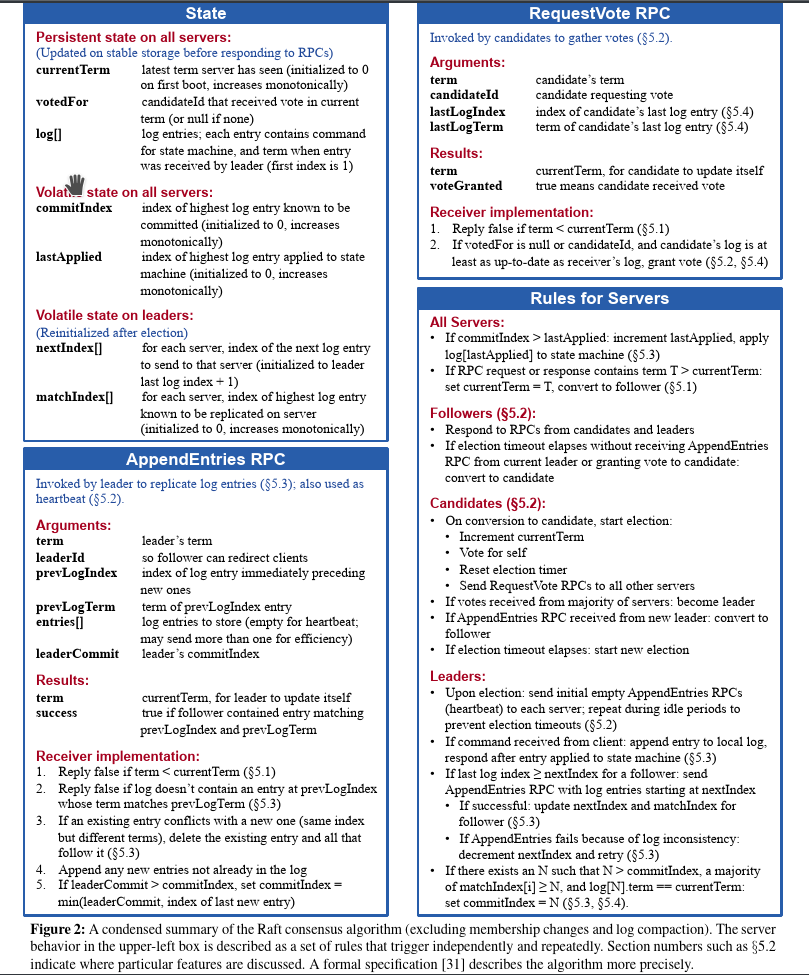
Raft实现共识的方式是：首先选出一个公认（distinguished）的leader，然后由这个leader来负责完成管理复制日志的事务。Leader从客户端接收日志条目，将它们复制到其它服务器上，当可以将日志条目应用到状态机的时候，leader会通知其它服务器。例如，leader可以不用跟其它服务协商就确定在哪儿放置新的日志条目，数据只会从leader传输到其它服务器。Leader可能会失效（fail）或者同其它服务器断开连接，这时候会选出一个新的leader。
采用leader的方式，Raft将共识问题分解为三个相对独立的子问题（下面的子章节中会讨论到）：
- Leader选举
当现有的leader失效时，必须选出新的leader（5.2节）。 - 日志复制
Leader必须从客户端接收日志条目，复制到整个集群，强制其它日志跟它自己的日志一致（5.3节）。 - 安全
对Raft来说，关键的安全属性是图3中的状态机安全属性（State Machine Safety Property）：如果任一台服务器应用了某个特定日志条目到自己的状态机，那么不会有其它服务器在同样的日志位置应用一个不同的命令。5.4节描述了Raft是如何确保这一点的；解决方式涉及到在5.2节描述的选举机制基础上添加一个额外的限制。
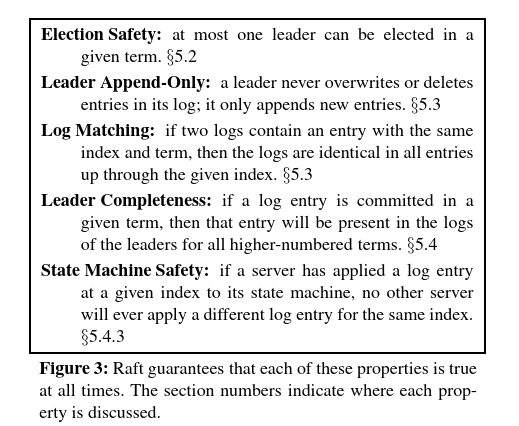
- 选举安全性
一个term里最多只会选出一个leader。5.2节 - Leader日志只追加
Leader绝不会覆盖或者删除日志中的条目；它只会追加新日志条目。5.3节 - 日志匹配
如果两个日志中包含index和term相同的日志条目，那这两个日志从开始位置直到此日志为止的所有日志条目都是对应相同的。5.3节 - Leader完整性
如果日志条目在某term中提交了，那这条日志条目一定会出现在所有后续的term的leader的日志中。5.4节 - 状态机安全性
如果一台服务器应用了某个索引位置的日志条目到状态机，不会有其它服务器在同样的索引位置上应用不同的日志条目。5.4.3节
描述完算法之后，本章节还会讨论可用性问题和系统中计时（timing）的作用。
5.1 Raft基础（Raft basics）
一个Raft集群包含多台服务器；五台是典型配置，这样系统可以容忍两台失效。在任意时刻，每台服务器处于以下三个状态之一：leader，follower和candidate。正常情况下，有且只有一个leader，其它都是follower。Follower是被动的：它们自己不会发出任何请求，而仅仅是响应leader和candidate的请求。Leader处理所有的客户端请求（如果客户端跟follower通信，follower会将它重定向到leader）。第三种状态(candidate)用于选出一个新的leader（如5.2节所述）。图4显示了这些状态以及状态间的转换；下面会讨论这些状态转换。
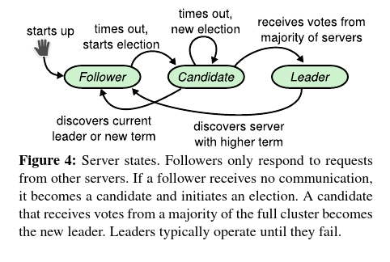
Raft将时间划分为如图5所示的任意长度的term。Term用连续的整数编号。每个term都开始于一次 选举（election） ，选举时会有一个或者多个candidate尝试成为leader（如5.2所描述的）。如果一个candidate赢得了选举，它就会担任此term剩余时间的leader。某些情况下，选举可能会出现投票分裂（split vote）。这时，当前term会以无leader的状态结束；一个新的term（伴随着一次新的选举）很快会开始。Raft保证每个term最多只会有一个leader。
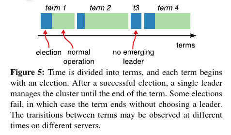
不同服务器可能在不同的时间观察到term变更，在某些情况下，一台服务器可能不会观察到某次选举甚至是整个term。在Raft中，term充当逻辑时钟14，服务器靠它来检测过时的信息，例如旧term的leader。 每个服务器都会存储当前term编号 ，此编号随时间单调增大。服务器在通信的时候会交换当前term；如果一台服务器的当前term比另一台的小，它就会将term更新成更大的那个。如果一个candidate或leader发现它的term过期了，它会立刻恢复到follower状态。如果一台服务器收到的请求中带的term过期了，它就会拒绝这个请求。
Raft服务器通过远程过程调用（RPC）来通信，基础的共识算法只需要两类RPC。RequestVote RPC是由candidate在选举过程中发起的（5.2节），AppendEntries RPC由leader发起，用于复制日志以及作为心跳（5.3节）。第7节添加了用于在服务器之间传输快照的第三个RPC。如果没有及时收到响应，服务器会重试RPC，并且服务器是以并行的方式来发起RPC以求最佳性能。
5.2 Leader选举（Leader election）
Raft使用心跳机制来触发leader选举。服务器以follower身份启动。只要能从leader或candidate收到有效的RPC（译注：leader的心跳或者candidate的投票请求）请求，服务器就会一直处于follower状态。Leader会周期性地发送心跳（不带日志条目的AppendEntries RPC）到所有的follower，以保持leader状态。如果一个follower经过了一段称为选举超时（election timeout）的时间之后没有收到消息，它就会假设没有在运行的leader，并开启一次选举来选出一个新的leader。
开始选举时，follower会增大其当前的term，转为candidate状态。接着它会先给自己投票，然后以并行方式发起RequestVote RPC到集群内的其它所有服务器。Candidate会一直保持其candidate状态，直到下面三个事件之一发生：(a) 它赢得选举，(b) 另一台服务器赢得选举，(c) 经过一段时间后没有选出leader。这三种情况会在下面段落中分别讨论。
一个candidate在如下情况下会赢得选举：在同一个term中得到了整个集群的大多数服务器的投票。在一个特定的term中，每台服务器最多会给一个candidate投票，遵循先来先服务的原则（5.4节给投票施加了额外的限制）。多数集规则确保在一个特定term里，最多只会有一个candidate赢得选举（图3中的选举安全属性）。一旦一个candidate赢得选举，它就成为leader。它会给其它所有的服务器发送心跳消息来确立自己的身份，阻止新的选举开启。
在等待投票时，candidate可能会收到另一个服务器发来的、用以确立leader身份的AppendEntries RPC。如果这个leader的term不比此candidate的term小，candidate就会承认其leader身份合法，并转为follower状态。如果这个AppendEntries RPC中的term比candidate当前的term小，candidate就会拒绝这个RPC，并继续保持在candidate状态。
第三个可能的结果是一个candidate既没赢得选举也没输掉选举：如果有多个follower同时变为candidate，投票就可能会分裂，导致没有candidate赢得多数服务器的投票。当这种情况发生，每个candidate会超时，然后开始新的选举：增大自己的term，开始新一轮的RequestVode RPC。但是，如果没有额外的措施，投票分裂可能会一直重复下去。
Raft使用随机化的选举超时来确保投票分裂很少发生，如果发生，也能很快解决。为了从一开始（译注：指的是一次选举的发生）就避免出现投票分裂，投票超时从一个固定的区间（例如150-300毫秒）随机地选择。这样服务器的超时各不相同，使得大多数情况下只会有一台服务器超时（译注：意思是各个服务器的 选举超时 不同，选举超时最小的服务器已经超时的时候，其它服务器还在等待超时中）；它会在其它服务器超时之前赢得选举并发出心跳消息。同样的机制也用来处理投票分裂。每个candidate在选举开始的时候再次随机选择一个选举超时，它在开启下次选举之前会等待这个超时过去；这减少了新选举中再次发生投票分裂的可能。9.3节展示了这种方式可以快速地选出一个leader。
选举是可理解性指导我们如何在不同的设计中做选择的例子。一开始，我们打算使用一个排名系统（ranking system）：给每个candidate指定一个排名，用于在互相竞争的candidate间做选择。如果一个candiate发现了另一个排名更高的candidate，它会转回到follower状态，这样排名高的candidate更容易赢得下次选举。我们发现这种方式会导致微妙的可用性问题（当排名高的服务器失效时，一个排名低的服务器需要等待超时后再次变为candidate，但如果它的超时太短，它可能会导致选举半途而废）。我们对算法做了多次调整，但每次调整后都会有新的问题出现。最终我们确定随机化重试的方式更容易理解。
5.3 日志复制（Log replication）
Leader被选出后就开始处理客户端请求。每个客户端请求包含一条要被复制状态机执行的命令。Leader将命令作为新的日志条目追加到它的日志中，然后并行发起到其它服务器的AppendEntries RPC来复制这个日志条目。当日志条目被安全地复制（如下所述），leader就会在状态机中执行命令，并将结果返回给客户端。如果有follower崩溃或者运行缓慢，或者有网络丢包，leader会无限次重试AppendEntries RPC（即便是在返回响应给客户端之后），直到所有的follower都保存了所有的日志条目。
日志按照如图6所示的方式组织。每个日志条目保存了一条状态机命令和leader收到日志条目时的term编号。日志条目中的term编号用于检测日志间的不一致，保证图3中的某些属性。每个日志条目还保存了一个整数索引，用来记录它在日志中的位置。
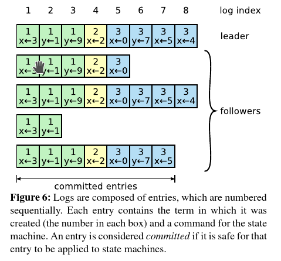
Leader决定什么时候可以将日志条目应用到状态机；这样的日志条目被称为已提交的（committed）。Raft保证已提交的日志条目是持久的（durable），最终会被所有可用的状态机执行。一旦创建日志条目的leader将此条目复制到了大多数的服务器上，这个日志条目就算是已提交了（例如图6中的条目7）。这也会将leader日志中新提交条目之前的所有条目都提交，包括以前的leader创建的日志条目。5.4节会讨论在leader改变之后应用这条规则的一些微妙之处，同时也会说明这儿定义的提交是安全的。Leader会记录它所知的要提交（日志条目）的最大索引，并在后续的AppendEntries RPC（包括心跳）中包含这个索引，这样其它服务器最终都能知道这一信息。一旦follower知道某个日志条目被提交了，它就会（按照日志顺序）将日志条目应用到本地状态机。
我们设计Raft的日志机制以便在不同服务器的日志之间维持高度的一致性。这个机制不仅简化了系统的行为，使得系统行为更可预测，也是保证安全性的重要组成部分。Raft维持如下的特性，这些特性一起构成了图3的日志匹配属性：
- 如果不同日志中的两个日志条目有相同的索引和term，那它们保存了同样的命令。
- 如果不同日志中的两个日志条目有相同的索引和term，那不同日志中此条目之前的所有条目都是完全相同的。
第一个属性之所以成立，是因为在某个特定的term中，leader在特定的索引位置最多会创建一个日志条目。第二个属性由AppendEntries做的一个简单的一致性检查来保证。发送AppendEntries RPC时，leader会新日志条目之前、紧临新日志的条目的索引和term也带上。如果follower的日志中没有同样term和索引的日志条目，follower就会拒绝新的日志条目。这个一致性检查起归纳步骤（induction step）的作用：一开始，空的日志满足日志匹配属性，添加新条目时，一致性检查会使得日志匹配属性继续满足。因此，当AppendEntries成功返回，leader就知道从第一个日志条目一直到新添加的条目，follower跟它自己的是完全一致的。
正常运行时，leader和follower们的日志是保持一致的，因此AppendEntries的一致性检查不会失败。但是，leader崩溃会导致日志不一致（旧leader可能没有完全复制日志中的所有条目）。这些不一致可能会由于一连串的leader和follower崩溃而更加严重。图7展示了follower跟新leader日志不一致的多种可能情况。Follower可能缺失一些日志条目，也可能多出来一些日志条目，也可能两种情况同时出现。缺失的和多余的日志条目可能持续出现在多个term中。
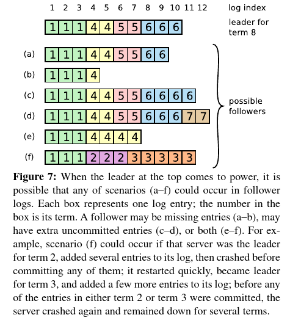
在Raft中，leader处理不一致的方式是强制follower以leader日志为准。这意味着follower日志中有冲突的日志条目会用leader日志中的对应条目覆盖掉。5.4节会说明，当加上另一个限制，这样处理是安全的。
为了使follower的日志跟leader的一致，leader必须找出它们之间最后一条匹配的日志条目，删除follower上此条目之后的所有条目，然后将leader上此条目之后的条目发送给follower。所有这些都是处理AppendEntries RPC所做的一致性检查过程中发生的。Leader为每个follower维护一个nextIndex，这是leader要向follower发送的下一个日志条目的索引。新leader被选出来之后，它会将所有的nextIndex的值初始化为其最新的日志条目的索引加1（图7中的11）。如果follower的日志跟leader的不一致，下一次的AppendEntries一致性检查就会失败。被拒绝后，leader将nextIndex减1，然后重试AppendEntries RPC。最终，nextIndex会后退到leader跟follower的日志匹配的位置。这时，AppendEntries会成功，它会删除follower上所有有冲突的日志条目，从leader日志中追加日志条目（如果有的话）。一旦AppendEntries成功了，follower的日志就跟leader的一致了，在term的剩余时间里也会一直如此。
如果需要，可以优化上述协议来减少AppendEntries RPC的重试次数。例如，当一个AppendEntries被拒绝了，follower可以返回有冲突的日志条目的term以及此term的第一个日志条目的索引。有了这些信息，leader在减小nextIndex时可以忽略那个term中所有有冲突的日志条目；对于有日志条目冲突的term，每个term只需要一次AppendEntries RPC，而不是每个日志条目一次。实践中，我们怀疑这个优化的必要性，因为失败不会经常发生，不太可能会出现很多不一致的日志条目。
利用这个机制，新选出的leader不需要采取任何特殊操作来使得日志一致。它只需要开始正常的操作，当出现AppendEntries一致性检查失败时，日志会自动恢复一致。Leader决不会覆盖或者删除它自己日志中的条目（图3中的Leader只会追加属性）。
这个日志复制机制展示了第2节中描述的理想的共识属性：只要有超过一半的服务器在正常运行，Raft就可以接收，复制，以及应用新日志条目；正常情况下，一条新的日志条目只需要一个消息来回就能复制到集群的大多数服务器；一台慢的follower不会对性能有影响。
5.4 安全性（Safety）
前面的章节描述了Raft如何选举leader和复制日志条目。但是目前为止描述的那些机制，对于保证每个状态机按同样的顺序精确地执行同样的命令还不够。例如，在leader提交多个日志条目的时候，一个follower可能正好不可用，然后这个follower可能会被选为leader，并用新的日志条目覆盖旧leader已提交的那些；因此，不同状态机可能执行不同的命令序列。
这一节添加了一个限制－－限制哪些服务器能被选为leader－－来完善Raft算法。这个限制保证任何一个term的leader都包含以前的term提交的所有日志条目（图3中的Leader完整性属性）。有了这个限制，提交规则就更严格了。最后，我们给出了Leader完整性属性的一个证明框架，并展示了由leader完整性属性如何得到复制状态机的正确行为。
5.4.1 选举的限制（Election restriction）
在任何基于leader的共识算法中，leader最终都必须要存储所有已提交的日志条目。在某些共识算法中（例如Viewstamped Replication），即便开始时不包含所有已提交的日志条目，也可以被选为leader。这些算法中有其它机制来识别缺失的条目，并将这些条目传输给新的leader，这可能发生在选举过程中，也可能在选举后不久。不幸的是，这引入了大量的额外机制和复杂性。Raft使用了更简单的机制，它保证所有在以前term的已提交的日志条目，在选举开始的时候就已经出现在新leader的日志中，也就不需要传输日志条目给leader。这就是说日志条目只会沿着一个方向传输，从leader到follower，并且leader从来都不会覆盖它们日志中已存在的条目。
Raft在投票过程中阻止未包含所有已提交日志条目的candidate赢得选举。一个candidate必须要跟集群服务器的多数集通信以便被选中，这意味着每条被提交的日志条目必定出现在其中至少一台服务器上。如果candidate的日志至少跟那个多数集中的每一台服务器的日志一样新（up-to-date）（下面会精确定义up-to-date），那它就拥有所有的已提交日志条目。RequestVote RPC执行这个限制：RPC带有candidate日志的信息，如果follower的日志比candidate的更新，它就会拒绝投票。
Raft通过比较日志中末端条目的索引和term来确定两个日志中哪一个更新。如果末端条目的term不同，则term大的日志更新。如果末端条目的term相同，条目数越多的日志越新。
5.4.2 提交旧term的日志条目（Committing entries from preview terms）
如5.3节所述，当某个日志条目保存在大多数服务器上之后，leader就知道来自其当前term的这条日志条目被提交了。如果在提交一条日志条目之前leader崩溃了，后面的leader会尝试完成此条目的复制。但是，对于来自旧term的日志条目，leader不能仅凭它是否已经存储在大多数服务器上就立即确定这条日志条目已经提交了。图8展示了一种情况，老的日志条目已经存储在大多数服务器上，但还是会被后来的leader覆盖掉。
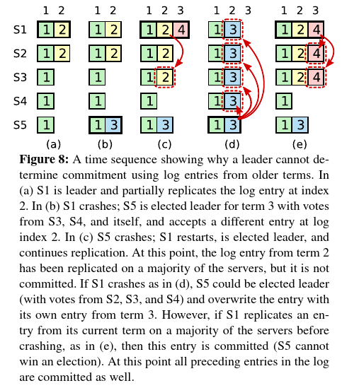
为了减少类似图8中的问题，Raft不会靠数有多少台服务器已经复制了来自旧term的日志条目来确定这些日志条目是否能提交。Leader只会对当前term的日志条目这样做；一旦来自当前term的一条日志条目被提交，基于日志匹配属性，所有以前的日志条目都会被间接地提交。在某些情形下，leader可以安全地确定一条旧的日志条目是否可以提交（例如，当此条目已经存储在所有服务器上），但Raft为了简洁采用了更保守的策略。
Raft之所以在提交规则中承担这额外的复杂性，是因为leader在复制来自旧term的日志条目时，日志条目会保留原始的term编号。在其它的共识算法中，如果一个新term要复制来自旧“terms”的日志条目，它必须用新的“term编号”来做。Raft采用的方式更容易分析日志条目，因为它们的term编号不会随着时间和所在日志不同而改变。另外，比起其它算法，Raft中新leader需要从旧term发送的日志条目数更少（其它算法必须发送大量的日志条目以对它们重新编号，然后才能提交它们）。
5.4.3 安全性论证（Safety argument）
注：为了表述起来更清楚，下面给原文中的一些实体添加了字母标签，例如E，V等。
给出了完整的Raft算法，现在我们可以更精确的来证明leader完整性属性是成立的（这个论证基于关于安全性的证明；见9.2节）。我们假设leader完整性属性不成立，它们我们证明会导出矛盾。假设term T的leader（记为\(leader_T\)）在它的term内提交了一条日志条目（注：记为E），但是这个日志条目没有被后来的某个term的leader保存下来。Term U是大于T，且其leader（\(leader_U\)）未保存E的最小的term。
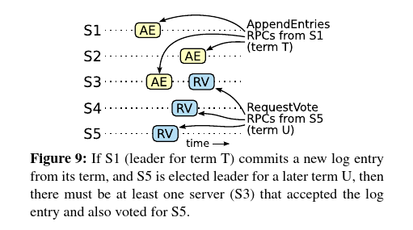
- leaderunil选举开始的时候，日志条目E肯定不在其日志中（leader不会删除或者覆盖日志条目）。
- leaderT将E复制到了集群的大多数服务器上，leaderU得到了集群大多数服务器的投票。因此，至少有一个服务器（注：记为V）既从leaderT收到了E，又给leaderU投了票，如图9所示。V是导出矛盾的关键。
- V在给leaderU投票 前 必定已经从leaderT接收了日志条目E；否则，它就会拒绝leaderT的AppendEntries请求（它的当前term比T的更大）。（注：这儿论述的重点是投票前还是投票后从T接收的日志条目E）
- V在给leaderU投票的时候一定还保存着日志条目E，因为在T、U之间的所有leader都有这个条目（来自假设－U是未保存E的最小的term），leader不会移除日志条目，而follower只会在跟leader日志有冲突时才会移除条目。
- V投票给了leaderU，因此leaderU的日志至少跟V的一样新。这会导出两个矛盾之一。
- 首先，如果V和leaderU最近的term是相同的，那leaderU的日志至少跟V的一样新，那它就包含了V的日志中的所有条目。这是一个矛盾，因为V包含E，但是根据假设，leaderU却没有。
- 另一方面，leaderU最后一条日志的term一定比V的大。此外，也比T大，因为V的最后一条日志的term至少跟T一样大（V日志中有来自term T的已提交的日志E）。创建了leaderU中最后一条日志条目的leader肯定包含了条目E（根据假设）。那么，根据日志匹配属性，leaderU的日志一定也包含了条目E，这是一个矛盾。
- 矛盾论述完了。因此，比T大的所有term的leader肯定都会包含来自T、在T中提交的所有日志条目
- 日志匹配属性保证所有后来的leader也会包含被间接提交的日志条目，例如图8(d)中的索引2。
有了leader完整性属性，我们可以证明图3中的状态机安全属性，这个属性是说，如果一台服务器在某个索引位置应用了一条日志条目到它的状态机，不会有其它服务器在相同索引位置应用另一条不同的日志条目。在服务器应用日志条目的时候，服务器的日志中从起始日志条目到刚被应用的日志条目，跟leader的日志中对应条目都是相同的，被应用的日志也已经提交了。现在考虑满足如下条件的最小的term：此term中有一台服务器应用了某特定索引的日志条目；日志完整性属性保证后续的所有term的leader都会保存同样的日志条目，因此，在后续term中应用相同索引日志条目的服务器应用的肯定是同样的值。因此，状态机安全属性成立。
最后，Raft要求服务器按照日志中索引的顺序应用日志条目。结合状态机安全性属性，这意味着所有服务器都会以同样的顺序，应用同样的日志条目到它们的状态机。
5.5 Follower和Candidate崩溃（Follower and candidate crashes）
目前为止，我们关注了leader失效。Follower和candidate崩溃比leader崩溃处理起来更简单，并且可以用同样的方式处理。如果follower或candidate崩溃，后续发给它们的RequestVode和AppendEntries都会失败。Raft使用无限重试的方式处理这些失败；如果崩溃的服务器重启，RPC就会成功完成。如果一台服务器在处理完RPC之后、返回响应之前崩溃，它重启之后就会再次收到崩溃前的RPC。Raft RPC都是幂等的，因此不会有问题。例如，如果follower收到的AppendEntries请求中的日志条目在日志中已经存在了，它会忽略掉新请求中的那些条目。
5.6 计时和可用性（Timing and availability）
我们对Raft的其中一个要求是安全性不能依赖于计时：系统不能因为某些事件发生得比预期的快或者慢就生成不正确的结果。但是，可用性（系统及时响应客户端的能力）不可避免的要依赖于计时。例如，如果消息交换需要的时间比服务器崩溃的典型时间要长，candidate就没法正常运行足够长的时间来赢得选举；没有一个稳定的leader，Raft就做不了什么有用的工作。
Leader选举是Raft算法中特别依赖计时的部分。只要系统满足如下的计时要求，Raft就能选出并维持一个稳定的leader：
broadcatTime ≪ electionTimeout ≪ MTBF
在这个不等式中，broadcastTime是一台服务器并行发送RPC到集群中每台服务器并接收到响应所需要的平均时间；electionTimeout是5.2节描述的选举超时；MTBF是单台服务器的平均故障间隔时间。广播时间应该比选举超时小一个数量级，这样leader可以可靠地发送心跳消息来防止follower开启选举；考虑到选举超时使用的随机化方式，这个不等式也使得投票分裂不可能出现。选举超时应该比MTBF小几个数量级，这样系统才能持续取得进展。当leader崩溃了，系统不可用的时间大致就是选举超时那么长；这只占总时间的很小一部分。
广播时间和MTBF是底层系统的属性，而选举超时是我们要选择的。Raft的RPC一般需要接收方将信息持久化到稳态存储，因此广播时间大概在0.5毫秒到20毫秒之间，取决于存储技术。因此，选举超时很可能在10毫秒到500毫秒之间。典型的MTBF是几个月或者更多，这很容易就满足计时需求了。
6 集群成员变更（Cluster membership changes）
目前为止，我们假设集群的配置（参与共识算法的所有服务器）是固定不变的。实际上，偶尔有变更配置的需要，例如替换出故障的服务器，或者改变副本数。虽然这可以将整个集群下线，更新配置文件，然后重启集群来完成，但在改变配置期间，集群是不可用的。另外，如果有人工操作，就有出错的风险。为了避免这些问题，我们决定自动化配置变更，将配置变更整个到Raft一致性算法中。
为了安全地进行配置变更，在变更过程中，任何时候都不应该出现同一个term有两个leader的情况。不幸的是，将旧配置直接切换到新配置的任何方法都是不安全的。不可能自动地将所有服务器同时切换，因此切换过程中集群有可能分裂为两个独立的多数集（见图10）。
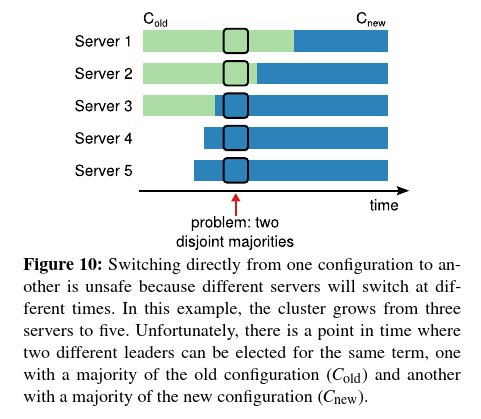
为了保证安全，配置变更必须使用两阶段方式。有多种方法来实现这两个阶段。例如，有些系统（例如22）使用第一阶段来禁用旧的配置，这样它们旧不能处理客户端请求了；然后第二个阶段起用新的配置。在Raft中，集群首先切换到过渡的配置： 联合共识（joint consensus） ；一旦联合共识被提交了，系统就会切换到新的配置。联合共识包含了旧的和新的配置：
- 日志条目会复制到新旧配置中的所有服务器。
- 新旧配置中的任意服务器都可以充当leader。
- 协议（agreement；用于选举和日志提交）需要旧配置和新配置的各自的多数集。
联合共识允许个别服务器在不同时刻从一个配置转换到另一个配置，而且不会出现安全问题。另外，联合共识使得集群在配置变更期间可以继续处理客户端请求。
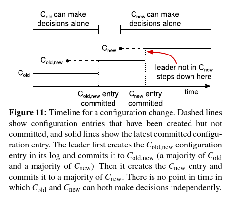
集群配置使用特殊的日志条目保存在复制日志中；图11展示了配置变更的过程。当leader收到将配置由Cold变更为Cnew的请求，它会将联合共识的配置（图中的Cold,new）作为日志条目保存下来，利用前述的机制复制此日志条目。一旦某台服务器将新的配置条目添加到日志中，它就将这个配置用于所有后续的决定中（服务器永远都使用日志中最新的配置，不管是否已经提交）。这意味着leader会使用Cold,new的规则来确定Cold,new的日志条目是否已经提交。如果leader崩溃了，新的leader会在Cold或者Cold,new中选出，取决于赢得选举的candidate是否已经收到Cold,new。不管是哪种情形，Cnew在此期间都不能单方面做出决策。
一旦Cold,new提交了，不管是Cold还是Cnew，都不能在没有对方批准的情形下做出决策，Leader完整性属性会确保只有收到Cold,new日志条目的服务器才能被选为leader。重复一次，服务器接收到新的配置之后，这个配置就开始生效了。当新的配置在Cnew中被提交了，旧的配置就没用了，不在新配置中的服务器就可以关闭了。如图11中所示，任何时候，Cold和Cnew都不会做出单方面决定；这保证了安全。
还有三个配置变更的问题需要解决。第一个问题是新服务器一开始可能没有任何日志。如果它们就这样加入到集群，可能需要花很长时间才能收到最新的日志，在此期间它可能没法提交新的日志条目。为了避免可用性缺口，Raft在配置变更之前引入了一个额外的阶段，在这个阶段，新加入集群的服务器作为非投票成员（leader会复制日志给它们，但是它们不算作是多数集）。一旦新服务器接收完所有的日志，配置变更就可以按前述的算法进行了。
第二个问题是集群leader可能不在新配置中。这种情况下，leader一旦提交了对应Cnew的日志条目，它就会变为follower状态。这意味着有一段时间（在它提交Cnew时），leader管理着不包括它自身在内的集群；它会复制日志，但自己不算在多数集里。Cnew提交之后leader转换就开始了，因为这时新配置可以独自运转了（能从Cnew中选出一个leader了）。在此之前，可能只有Cold的服务器可以被选为leader。
第三个问题是被移除的服务器（不在Cnew中的那些）会破坏集群。这些服务器不会再收到心跳，因此它们会超时并开启新的选举。它们会使用新term编号发送RequestVote RPC，这会导致当前的leader转为follower。新的leader最终会被选出来，但是被移除的服务器还会超时，这个过程会重复，导致可用性差。
为了防止出现这个问题，服务器如果认为当前存在leader，它们就会忽略RequestVote RPC请求。特别是，如果一台服务器在距最近一次跟当前leader通信的时间间隔比最小选举超时还短的时间内收到了RequestVote RPC，它不会更新自己的term或者投票。这不会影响正常的选举，因为每个服务器在开启选举前都至少会等待最小的选举超时。但是，这可以帮助避免被移除服务器的破坏：如果leader能够跟集群通信，它就不会被更大的term编号给废掉。
7 日志压缩（Log compaction）
随着处理的客户端请求越来越多，Raft的日志会随之增大，但在实际系统中，日志不可能无限量的增长。随着日志增大，会占用更多的空间，重新处理（replay）也需要花费更多时间。如果没有机制丢弃日志中积累的过时数据，最终就会出现可用性问题。
生成快照是最简单的压缩方式。生成快照时，系统当前的完整状态会被写到磁盘存储的一个快照中，在此之前的日志就可以全部丢弃了。Chubby和ZooKeeper使用了快照技术，本节的剩余部分会描述Raft中的快照。
增量压缩方式，例如日志清理36和日志结构归并树30 5，也是可行的。这些技术一次处理一部分数据，因此能够将压缩负载随时间均衡地分散开来。首先他们会选择积攒了大量被删除、被覆盖对象的数据区域，将此区域的活跃（live）数据归集到一起，然后释放此区域。跟快照方式（总是处理完整的数据集，因此简化了问题）比起来，这需要大量的额外机制和复杂性。使用日志清理技术需要对Raft做改动，但状态机可以使用跟快照相同的接口来实现LSM树。
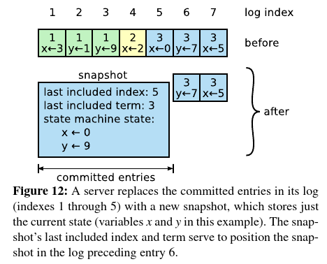
图12展示了Raft中快照技术的基本思想。每个服务器独立生成快照，只处理日志中已经提交的日志条目。主要的工作是把状态机的当前状态写到快照中。Raft快照中还会包含少量的元数据： last included index 是快照中包含的最后一条日志条目（已经应用到状态机的最新的日志条目）的索引， last included term 是此条目的term。保存这些数据是为了支持AppendEntries针对快照后的第一条日志条目所做的一致性检查，因为此日志条目需要前一条目的索引和term。为了支持集群成员变更（第6节），快照还会包含last included index之前的最新配置。快照生成后，服务器就会删除直到last include index在内的所有日志条目，以及以前的快照。
虽然服务器是独立生成快照的，但有时候leader也需要向落后的follower发送快照。这出现在leader已经将需要发送给follower的日志条目丢弃的时候。幸运的是，正常运行时不太可能出现这种状况：进度正常的follower已经收到这条日志条目。但是，特别慢的follower或者刚加入集群的服务器（第6节）会出现。处理方式就是由leader经过网络发送快照给它们。
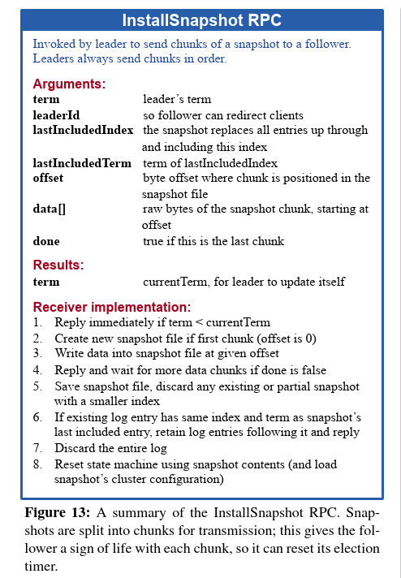
Leader使用一个新的RPC——InstallSanpshot——将快照发送给进度滞后的follower；见图13。当follower接收到快照，它必须决定处理处理现有的日志条目。一般来说快照会包含在接受者日志中不存在的信息。这种情况下，follower会丢弃整个日志；日志会被快照取代，而且日志中可能有跟快照冲突的未提交条目。如果follower接收到的快照只包含其日志的前面一部分数据（由于重传或者出现错误），跟快照对应的日志条目会被删除，剩余的日志条目是有效的，必须保留着。
这种快照方法跟Raft的强leader原则有点偏离，因为follower可以在没有leader参与的情况下生成快照。Leader可以避免在达成共识是出现冲突，生成快照的时候共识已经达成了，因此不会出现冲突。数据还是只从leader传输到follower，只是现在follower在重新组织它们的数据。
我们考虑过另一种基于leader的方式，只有leader能创建快照，然后它将快照发送到所有的follower。但是这种方式有两个缺点。首先，发送快照到每个follower会浪费网络带宽，拖慢快照过程。每个follower已经有生成快照的信息，而且使用本地状态生成快照要比通过网络来发送/接收快照成本更低。其次，leader的实现会更复杂。例如，leader需要在发送快照给follower的同时复制新的日志条目给它们，还不能阻塞新的客户端请求。
还有两个影响快照性能的问题。第一个问题，服务器必须决定什么时候生成快照。如果太频繁，会浪费磁盘带宽和能源；如果间隔太旧，有耗尽存储空间的风险，也会增加重启时重新处理日志的时间。一个简单的策略是当日志字节数达到某个固定的值时生成快照。如果这个阈值设置的比预期的快照大小大很多，生成快照的磁盘负担就会很小。
第二个性能问题是写快照会花费比较长的时间，我们不希望这会耽搁正常的操作。解决方法是使用写时复制技术，这样可以接受新的更新，又不会影响在写的快照。例如，使用函数式数据结构构造状态机天生支持这种技术。另外，操作系统的写时复制（例如Linux的fork）可以用来创建整个状态机的内存快照（我们的实现使用了这种方式）。
8 客户端交互（Client interaction）
这一节描述了客户端如何跟Raft交互，包括客户端如何发现集群leader，Raft怎么支持线性语义10。这是所有基于共识的系统都有的问题，Raft的解决方法跟其它系统类似。
Raft的客户端把所有请求都发给leader。客户端首次启动时，它连接到随机选择的服务器。如果客户端首次选择的服务器不是leader，服务器会拒绝客户端的请求，并告诉客户端它知道的最新的leader的信息（AppendEntries请求包含leader的网络地址）。如果leader崩溃了，客户端请求会超时；客户端会使用随机选择的服务器重试。
Raft的目标是实现线性化语义（每个操作看起来立即执行了，且只执行了一次，执行时间位于操作开始和响应之间的某个点）。但是，按照目前所述，Raft会多次执行一个命令：例如，如果leader在提交了日志条目之后、响应客户端之前崩溃了，客户端会向新的leader重新发送命令，导致命令被再次执行。解决方法是：客户端给每个命令指定一个唯一的序号。状态机会针对每个客户端记录最新处理的命令序号，以及关联的响应。如果状态机收到的命令已经执行过了，它会立即响应，而不会再重新执行请求。
处理只读操作可以不向日志中写入任何内容。但是没有额外的措施，这可能有返回过期数据的风险，因为响应请求的leader可能已经被新的leader替代了，而旧leader并不知道新leader的存在。线性化读决不能返回过期数据，Raft需要两个额外的预防措施来保证这一点（且不使用日志）。首先，leader必须有关于哪些日志条目被提交了的最新信息。Leader完整性属性保证了leader有所有被提交的日志条目，但在term刚开始，它可能不知道是哪些条目。为了找出来，它需要在当前term中提交一条日志条目。Raft的处理方式是每个leader在term开始时向日志中提交一条空的 no-op 日志条目。其次，在处理只读请求前，leader要检查是否已经有更新的leader（如果有新的leader被选出来，它的信息可能已经过期了）。Raft的处理方式是leader在响应只读请求前，要跟集群的一个多数集交换心跳消息。或者，leader可以使用心跳机制来提供某种形式的租约9，但是这需要依赖计时来保证安全性（它假定时钟漂移有上界）。
9 实现和评估（Implementation and evaluation）
9.1 可理解性（Understandability）
9.2 正确性（Correctness）
9.3 性能（Performance）
11 结论（Conclusion）
12 致谢（Acknowledgments）
参考文献（References）
[1] BOLOSKY , W. J., B RADSHAW , D., HAAGENS, R. B., K USTERS , N. P., AND L I , P. Paxos replicated state machines as the basis of a high-performance data store. In Proc. NSDI’11, USENIX Conference on Networked Systems Design and Implementation (2011), USENIX, pp. 141–154.
[2] BURROWS , M. The Chubby lock service for loosely-coupled distributed systems. In Proc. OSDI’06, Symposium on Operating Systems Design and Implementation (2006), USENIX, pp. 335–350.
[3] CAMARGOS , L. J., S CHMIDT, R. M., AND P EDONE , F. Multicoordinated Paxos. In Proc. PODC’07, ACM Symposium on Principles of Distributed Computing (2007), ACM, pp. 316–317.
[4] CHANDRA , T. D., G RIESEMER , R., AND REDSTONE, J. Paxos made live: an engineering perspective. In Proc. PODC’07, ACM Symposium on Principles of Distributed Computing (2007), ACM, pp. 398–407.
[5] CHANG, F., D EAN , J., G HEMAWAT, S., H SIEH, W. C., W ALLACH , D. A., B URROWS, M., C HANDRA , T., F IKES, A., AND GRUBER , R. E. Bigtable: a distributed storage system for structured data. In Proc. OSDI’06, USENIX Symposium on Operating Systems Design and Implementation (2006), USENIX, pp. 205–218.
[6] CORBETT, J. C., DEAN , J., EPSTEIN, M., FIKES , A., F ROST , C., F URMAN , J. J., G HEMAWAT, S., G UBAREV , A., H EISER, C., H OCHSCHILD , P., HSIEH , W., KANTHAK , S., KOGAN, E., LI , H., L LOYD , A., MELNIK, S., MWAURA, D., N AGLE, D., Q UINLAN , S., R AO, R., ROLIG , L., S AITO , Y., S ZYMANIAK , M., TAYLOR, C., W ANG, R., AND W OODFORD , D. Spanner: Google’s globally-distributed database. In Proc. OSDI’12, USENIX Conference on Operating Systems Design and Implementation (2012), USENIX, pp. 251–264.
[7] C OUSINEAU , D., D OLIGEZ , D., LAMPORT, L., MERZ , S., R ICKETTS, D., AND VANZETTO, H. TLA+ proofs. In Proc. FM’12, Symposium on Formal Methods (2012), D. Giannakopoulou and D. Méry, Eds., vol. 7436 of Lecture Notes in Computer Science, Springer, pp. 147–154.
[8] GHEMAWAT, S., G OBIOFF , H., AND L EUNG , S.-T. The Google file system. In Proc. SOSP’03, ACM Symposium on Operating Systems Principles (2003), ACM, pp. 29–43.
[9] GRAY , C., AND CHERITON , D. Leases: An efficient fault-tolerant mechanism for distributed file cache consistency. In Proceedings of the 12th ACM Ssymposium on Operating Systems Principles (1989), pp. 202–210.
[10] HERLIHY, M. P., AND W ING , J. M. Linearizability: a correctness condition for concurrent objects. ACM Transactions on Programming Languages and Systems 12 (July 1990), 463–492.
[11] HUNT, P., K ONAR , M., J UNQUEIRA , F. P., AND R EED , B. ZooKeeper: wait-free coordination for internet-scale systems. In Proc ATC’10, USENIX Annual Technical Conference (2010), USENIX, pp. 145–158.
[12] JUNQUEIRA , F. P., R EED , B. C., AND S ERAFINI, M. Zab: High-performance broadcast for primary-backup systems. In Proc. DSN’11, IEEE/IFIP Int’l Conf. on Dependable Systems & Networks (2011), IEEE Computer Society, pp. 245–256.
[13] KIRSCH , J., AND AMIR , Y. Paxos for system builders. Tech. Rep. CNDS-2008-2, Johns Hopkins University, 2008.
[14] LAMPORT, L. Time, clocks, and the ordering of events in a distributed system. Commununications of the ACM 21, 7 (July 1978), 558–565.
[15] LAMPORT, L. The part-time parliament. ACM Transactions on Computer Systems 16, 2 (May 1998), 133–169.
[16] LAMPORT, L. Paxos made simple. ACM SIGACT News 32, 4 (Dec. 2001), 18–25.
[17] LAMPORT, L. Specifying Systems, The TLA+ Language and Tools for Hardware and Software Engineers. Addison-Wesley, 2002.
[18] LAMPORT, L. Generalized consensus and Paxos. Tech. Rep. MSR-TR-2005-33, Microsoft Research, 2005.
[19] LAMPORT, L. Fast paxos. Distributed Computing 19, 2(2006), 79–103.
[20] LAMPSON , B. W. How to build a highly available system using consensus. In Distributed Algorithms, O. Baboaglu and K. Marzullo, Eds. Springer-Verlag, 1996, pp. 1–17.
[21] LAMPSON , B. W. The ABCD’s of Paxos. In Proc. PODC’01, ACM Symposium on Principles of Distributed Computing (2001), ACM, pp. 13–13.
[22] LISKOV , B., AND COWLING, J. Viewstamped replication revisited. Tech. Rep. MIT-CSAIL-TR-2012-021, MIT, July 2012.
[23] LogCabin source code. http://github.com/logcabin/logcabin.
[24] LORCH , J. R., ADYA , A., BOLOSKY , W. J., CHAIKEN, R., DOUCEUR , J. R., AND HOWELL, J. The SMART way to migrate replicated stateful services. In Proc. EuroSys’06, ACM SIGOPS/EuroSys European Conference on Computer Systems (2006), ACM, pp. 103–115.
[25] MAO, Y., JUNQUEIRA , F. P., AND MARZULLO, K. Mencius: building efficient replicated state machines for WANs. In Proc. OSDI’08, USENIX Conference on Operating Systems Design and Implementation (2008), USENIX, pp. 369–384.
[26] MAZIÈRES , D. Paxos made practical. http://www.scs.stanford.edu/~dm/home/papers/paxos.pdf, Jan. 2007.
[27] MORARU , I., ANDERSEN , D. G., AND KAMINSKY , M. There is more consensus in egalitarian parliaments. In Proc. SOSP’13, ACM Symposium on Operating System Principles (2013), ACM.
[28] Raft user study. http://ramcloud.stanford.edu/~ongaro/userstudy/.
[29] OKI , B. M., AND L ISKOV , B. H. Viewstamped replication: A new primary copy method to support highly-available distributed systems. In Proc. PODC’88, ACM Symposium on Principles of Distributed Computing(1988), ACM, pp. 8–17.
[30] O’N EIL , P., CHENG, E., GAWLICK , D., AND ONEIL , E. The log-structured merge-tree (LSM-tree). Acta Informatica 33, 4 (1996), 351–385.
[31] ONGARO , D. Consensus: Bridging Theory and Practice. PhD thesis, Stanford University, 2014 (work in progress). http://ramcloud.stanford.edu/~ongaro/thesis.pdf.
[32] ONGARO , D., AND OUSTERHOUT, J. In search of an understandable consensus algorithm. In Proc ATC’14, USENIX Annual Technical Conference (2014), USENIX.
[33] OUSTERHOUT , J., AGRAWAL , P., ERICKSON , D., KOZYRAKIS , C., LEVERICH , J., MAZIÈRES , D., MITRA , S., NARAYANAN , A., ONGARO , D., PARULKARG., ROSENBLUM, M., RUMBLE, S. M., STRATMANNE., AND STUTSMAN, R. The case for RAMCloud. Communications of the ACM 54 (July 2011), 121–130.
[34] Raft consensus algorithm website. http://raftconsensus.github.io.
[35] REED , B. Personal communications, May 17, 2013.
[36] ROSENBLUM , M., AND OUSTERHOUT, J. K. The design and implementation of a log-structured file system. ACM Trans. Comput. Syst. 10 (February 1992), 26–52.
[37] SCHNEIDER , F. B. Implementing fault-tolerant services using the state machine approach: a tutorial. ACM Computing Surveys 22, 4 (Dec. 1990), 299–319.
[38] SHVACHKO , K., KUANG, H., RADIA , S., AND CHANSLER , R. The Hadoop distributed file system. In Proc. MSST’10, Symposium on Mass Storage Systems and Technologies (2010), IEEE Computer Society, pp. 1–10.
[39] VAN R ENESSE , R. Paxos made moderately complex. Tech. rep., Cornell University, 2012.